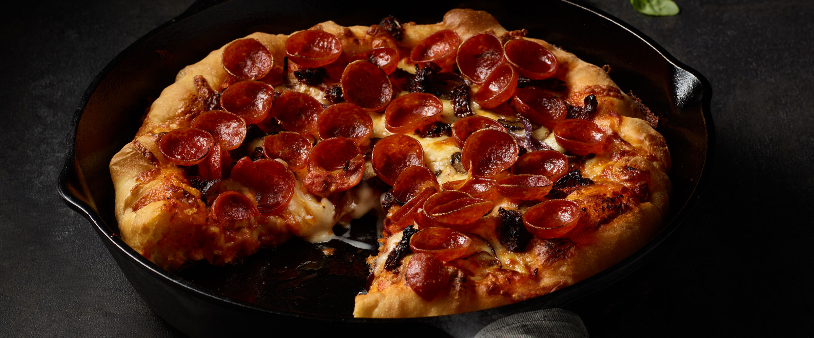

Pan Pizza - Da best you ever tasted

Description
This is honestly the easiest pizza recipe ever. So good, it just requires a bit of planning ahead.
You make the dough the night before. It'll be nice and ready for dinner time, and all you need to do is spread it out on a cast iron and add your toppings. It could not be any easier.
Ingredients
I do reccomend using a kitchen scale to weigh out ingredients. It is more precise and will give you more consistent results
- 400g bread flour (14 ounces; about 2 1/2 cups), plus more for dusting
- 10g kosher salt (0.35 ounces; about 2 teaspoons), plus more for sprinkling
- 4g instant yeast (0.15 ounces; about 1 teaspoon), such as SAF Instant Yeast
- 275g water (9.5 ounces; about 1 cup plus 3 tablespoons)
- 8g extra-virgin olive oil (0.25 ounces; about 2 teaspoons), plus more to coat pans and for drizzling
- 1 1/2 cups pizza sauce
- 12 ounces grated full-fat, low moisture (dry) mozzarella cheese
- Toppings as desired
Steps
- Combine flour, salt, yeast, water, and oil in a large bowl. Mix with hands or a wooden spoon until no dry flour remains. (The bowl should be at least 4 to 6 times the volume of the dough to account for rising.)
- Cover bowl tightly with plastic wrap, making sure that the edges are well sealed, then let rest at cool room temperature (no warmer than 75°F) for at least 8 hours and up to 24. Dough should rise dramatically and fill bowl. In a hot kitchen, the dough may overproof near the end of that range.
- Sprinkle top of dough lightly with flour, then transfer it to a well-floured work surface. Divide dough into 2 pieces and form each into a ball by holding it with well-floured hands and tucking the dough underneath itself, rotating it until it forms a tight ball.
- Pour 1 to 2 tablespoons oil in the bottom of two 10-inch cast iron skillets or round cake pans (see note). Place 1 ball of dough in each pan and turn to coat evenly with oil. Using a flat palm, press dough around the pan, flattening it slightly and spreading oil around the entire bottom and edges of the pan. Cover tightly with plastic wrap and let dough sit at room temperature for 2 hours (at room temperatures above 75°F, the dough may require less time to rise; at temperatures below 65°F/18°C, it may require more time). After the first hour, adjust an oven rack to the middle position and preheat oven to 550°F (290°C).
- After 2 hours, dough should be mostly filling the pan up to the edges. Use your fingertips to press it around until it fills in every corner, popping any large bubbles that appear. Lift up one edge of the dough to let any air bubbles underneath escape, then repeat, moving around the dough until there are no air bubbles left underneath and the dough is evenly spread around the pan.
- Top each round of dough with 3/4 cup sauce, spreading sauce to the very edge with the back of a spoon. Sprinkle evenly with mozzarella cheese, all the way to the edges. Season with salt. Add other toppings as desired. Drizzle with olive oil over the top of each pizza, if desired.
- Transfer pan to oven and bake until top is golden brown and bubbly and bottom is golden brown and crisp when you lift it with a thin spatula, 12 to 15 minutes. Immediately sprinkle with grated Parmesan or Pecorino Romano cheese, if using. Using a thin spatula, loosen pizza and peek underneath. If bottom is not as crisp as desired, place pan over a burner and cook on medium heat, moving the pan around to cook evenly until it is crisp, 1 to 3 minutes. Remove the pizzas and transfer to a cutting board. Cut each pizza into 6 slices and serve immediately.
Notes
Although mozzarella is standard, any good melting cheese, such as cheddar, Jack, or young provolone, will work for this recipe. This recipe is intended to be made with dry (aged) mozzarella cheese, the yellowish variety that comes in firm blocks. Do not use fresh mozzarella, as it is too moist. If you want to bake only one pizza at a time, you can transfer one ball of dough to a sealed zipper-lock bag or container in step 3 and store it in the refrigerator for up to three days. Continue with step 4 when ready to bake.